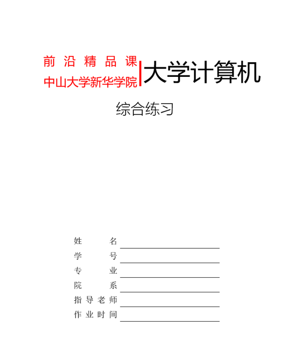

综合练习
Drill
- 点击下载示例文档 、表格数据文件 ，更多资源请到个人学习通"资料"区下载或自行准备
- 封面设计
-
在文档开始处，插入"空白页"，或使用快捷键CTRL + Enter，插入的新页面作为封面参考下图，利用表格布局，完成封面设计并录入个人真实信息
 参考封面 为文档添加文字水印"谢绝转发"为文档设置页面颜色为文档设置页面边框 - 段落
-
所有正文段落首行缩进2字符、正文宋体、西文新罗马Times New Roman、常规5号、段前段后6磅、固定行距20磅文档结束处的签名和日期，右对齐文档中"分栏"段落，分3栏显示：第1栏：宽度10，间距2字符；第2栏：宽度14，间距2字符；使用分隔线文档处"首字下沉"设置为首字下沉，颜色深红
- 表格
-
定位光标到文档"下面插入表格并计算"下面，"插入" → "文本" → "对象" → "文件中的文字"，选择下载的表格数据文件，将其内容导入到Word中；在"插入文件"对话框中，选择"所有文件(*.*)"可以看到所有文件格式选择导入的文本，"表格" → "文本转换成表格"，将导入的文本转换为表格为表格添加标题行，标题内容自定，合并单元格、居中为表格添加汇总行，除了最后一个单元格记录汇总的结果外，其它单元格合并使用公式计算人数总和完成表格样式的其它设置
-
表格基本框架参考 标题行 班级 专业 人数 基础1班 服装 78 基础2班 经济 79 基础3班 播音 76 汇总行 - 链接
-
页面内部跳转
将光标定位在文档第3页的"主题"前面，插入书签，输入标签名"主题" → "添加"并"确定"
选择文档第2页的"主题"，插入链接，选择"书签"，并选择创建的书签名"主题"并确定
按住Ctrl，单击超链接对象，页面瞬间跳转到定义的书签处，同时光标也定位在书签处，方便编辑
页面外部跳转选中文档中的"大树小站"，插入链接，在对话框底部的"地址"中输入完整的网址"https://glpla.github.io/"并确定
按住Ctrl，单击"大树小站"，打开大树小站学习网站
打开外部资源打开文档：选择文档中的"文档"，插入链接，在对话框中，利用"查找范围"定位到文档所在文件夹，选择并确定
打开图片：选择文档中的"图片"，插入链接，在对话框中，利用"查找范围"定位到图片所在文件夹，选择并确定
打开音频：选择文档中的"音频"，插入链接，在对话框中，利用"查找范围"定位到音频所在文件夹，选择并确定
打开视频：选择文档中的"视频"，插入链接，在对话框中，利用"查找范围"定位到视频所在文件夹，选择并确定
- 图文混排
-
在白纸上签上你的大名拍照传送到电脑；可以使用微信文件助手插入图片裁剪为合适大小将"着色"调整为"黑白50%"修改"文字环绕"为"四周型"拖到文档结束签名处插入当前日期
- 页眉页脚
-
为文档插入页眉，三栏内容，左中右分别插入文档的作者、标题和单位，并为页眉底部指定实线边框为文档插入页脚，三栏内容，左中右分别是主管、页码和主题，页码采用总页码和当前页码的形式如，2/4，并为页脚顶部指定实线边框封面页不显示页眉、页脚：利用"首页不同"和"起始页码"
- 提交
- 将处理好的Word文档导出为PDF格式，以学号+姓名的方式命名，如20231100张树彬，提交到学习通对应的作业
- 思考
- 指出设计中可能存在的不足和缺陷